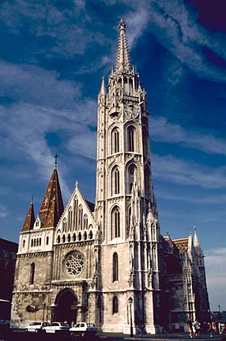

CUF
chapters are local groups of CUF members who gather for prayer, study, fellowship, and apostolic activity. CUF chapters promote CUF’s mission to support, defend, and advance the efforts of the teaching Church.
|
If you are interested in getting involved with a chapter in your area or forming a chapter where none yet exist, please contact our chapter coordinator at chapters@cuf.org. The following is a listing of the CUF chapters that currently have websites. This is by no means a comprehensive list of our chapters. Please contact us to find out if there’s a chapter in your area. To view a chapter’s website, click the chapter name below. |

|
St. Catherine of Siena Chapter (Anchorage, AK)
St. Gianna Beretta Molla (Tucson, AZ)
Mary, Mother of the Eucharist (Huntington Beach, CA)
Guardian of the Redeemer (San Jose, CA)
St. John the Baptist (Colorado Springs, CO)
Abba, Father Chapter (Indianapolis, IN)
St. Francis of Assisi Chapter (Fort Thomas, KY)
St. Thomas More Chapter (St. Paul, MN)
St. Gregory VII Chapter (Milwaukee, WI)

St. Gianna Beretta Molla (Tucson, AZ)
Mary, Mother of the Eucharist (Huntington Beach, CA)
Guardian of the Redeemer (San Jose, CA)
St. John the Baptist (Colorado Springs, CO)
Abba, Father Chapter (Indianapolis, IN)
St. Francis of Assisi Chapter (Fort Thomas, KY)
St. Thomas More Chapter (St. Paul, MN)
St. Gregory VII Chapter (Milwaukee, WI)